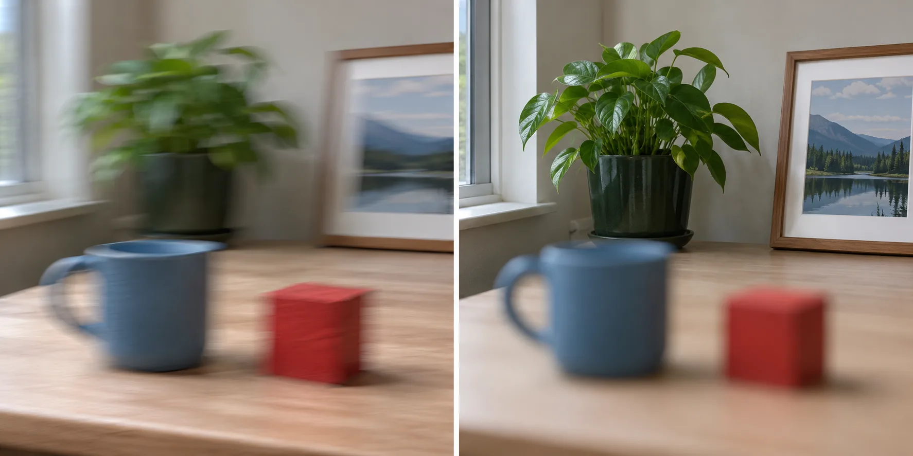

“Blurry” is not one problem. A photo can be soft because the camera moved, the subject moved, the focus landed on the wrong plane, or the file was changed during editing. The useful first step is diagnosis, not buying a sharper lens or raising every setting.
This guide uses visual clues to separate three common capture problems: camera shake, subject movement, and missed focus. The checks are deliberately simple and reversible. They are not a laboratory lens test, and they cannot prove that hardware is perfect. They can, however, tell you which next adjustment is worth trying.
Start with the blur pattern
Look at a high-contrast edge in the image: a printed letter, a table edge, or the outline of a face. Then ask three questions:
- Do edges smear in one direction? This often points toward movement during the exposure, especially when the whole scene shows a similar direction of smear.
- Is one part of the scene sharp while the intended subject is soft? The camera may have focused on another plane.
- Was the subject moving? A sharp background does not rule out subject movement; the subject may have changed position while the exposure was open.
These clues are not absolute diagnoses. They are a way to choose the next controlled check.
Camera shake: the frame moved
Camera shake happens when the camera changes position during the exposure. It is most noticeable when the shutter speed is slow, the lens is long, or the camera is held away from the body. The practical symptom is often a general softness across the frame, sometimes with a directional smear.
To check for camera shake, use a static subject and support the camera. A table, shelf, or stable support is enough for a basic check. Keep the framing the same and make one new exposure with a faster shutter speed if the camera allows it. If the supported or faster frame becomes clearer while the subject remains unchanged, movement was a plausible contributor.
Do not treat this as a promise that a particular shutter speed works for every camera. Stabilization, focal length, grip, and image size all change the result. The useful observation is the difference between two controlled frames.
Subject movement: the scene stayed still, but the subject did not
Subject movement can look like a focus failure because the background may remain sharp. Imagine photographing a person walking across a room. The wall may be clear while the person's hands, feet, or face show directional blur. The camera may have focused correctly at the start, but the subject changed position before the exposure finished.
Use a simple comparison: photograph a static object in the same light, then photograph a moving subject. If the static object is clear but the moving subject is soft, the next question is shutter speed and subject movement—not whether the lens can focus.
The intended result matters. If the goal is a crisp step, use a faster shutter direction and inspect the moving edges. If the goal is to show movement, blur can be the correct result. A blurry photo is not automatically a failed photo; it is a failed photo only when the blur conflicts with the stated intention.
Missed focus: a different plane is sharp
Missed focus occurs when the sharpest part of the image is not the intended subject. In a simple scene, you may see a nearby edge, background sign, or other object rendered more clearly than the face or object you meant to emphasize.
Check the focus plane before changing the exposure. Zooming in can help you compare the intended subject with nearby high-contrast objects, but do not judge sharpness only at extreme enlargement. The final viewing size matters too.
For the next frame, make the focus target more deliberate. Place the focus area over the subject you need to read, keep the subject within the useful depth of field, and avoid changing several controls at the same time. If the subject is moving toward or away from the camera, the relevant focus behavior may also change; a single-focus setting and a continuous-focus setting do not make the same timing decision.
A controlled five-minute check
Use one static target with a clear edge. Keep the light and framing as constant as possible.
- Make one ordinary handheld frame.
- Make a second frame with the camera supported.
- Make a third frame with a more deliberate focus target.
- If the subject will move in real use, make a separate moving-subject frame.
- Compare the same edge or facial feature in each frame.
Record what changed. If only support changed and the result improved, camera movement deserves attention. If only the focus target changed and the intended plane improved, focus placement was likely part of the problem. If the static frame is clear but the moving frame is not, subject movement and shutter speed become the next investigation.
This sequence is more informative than taking twenty random frames. It changes one cause at a time and gives each result a question.
When more than one cause is present
Real scenes can contain overlapping problems. A person may move while the camera is also handheld, and the focus target may be uncertain at the same time. Do not force the frame into one category too early. Start with the most controllable condition: use a static subject, support the camera, and make the focus target deliberate. Once that frame is understandable, reintroduce movement.
This order matters because a moving test subject can hide a focus improvement, while an unstable camera can make a correct focus decision look soft. A controlled baseline is not meant to imitate the final photograph. It is a reference that lets you interpret the final photograph more honestly.
When to stop troubleshooting
Stop the home diagnosis when the problem remains repeatable under controlled conditions, appears across different subjects and distances, or is accompanied by a mechanical error. At that point, consult the current camera or lens documentation or an appropriate service provider. Do not open or modify equipment based on a web tutorial.
The goal is not to prove that a lens is perfect. The goal is to avoid blaming the lens when the real issue was movement or focus choice—and to recognize when a repeatable hardware problem deserves proper support.
Research sources
Sources
- Photography for beginners: master the basics — Photography for beginners: master the basics
- A Basic Look at the Basics of Exposure — A Basic Look at the Basics of Exposure
- Camera settings 101: Getting to know the basics — Camera settings 101: Getting to know the basics
- Your Nikon School guide to improving your photography — Your Nikon School guide to improving your photography